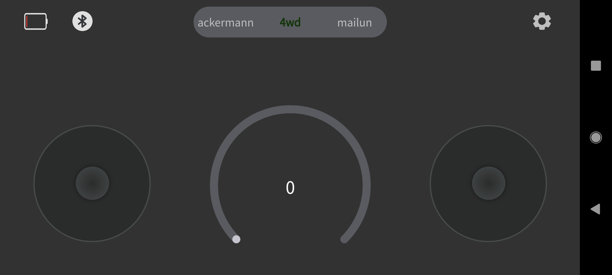

Mobile App Setup
Download and install the controller application to your mobile phone using the QR code below.
Tap on the Bluetooth icon in the upper left to open the connection menu.
Select the connection with the same name as the one on the front of your robot.
Once connected, you will see the battery level of your robot as well as the connection symbol. You should also be able to control your robot. Find information on controlling your robot using the mobile app in the App Operation Guide.

Download and install the controller application to your mobile phone using the QR code below.
Note
If you have difficulty installing the application, you can search for AgileX on the App Store instead.
Select the connection with the same name as the one on the front of your robot.
Once connected, you will see the battery level of your robot as well as the connection symbol. You should also be able to control your robot. Find information on controlling your robot using the mobile app in the App Operation Guide.
Continue on to the Mobile App Usage for details on how to control and configure your LIMO with the newly installed app.